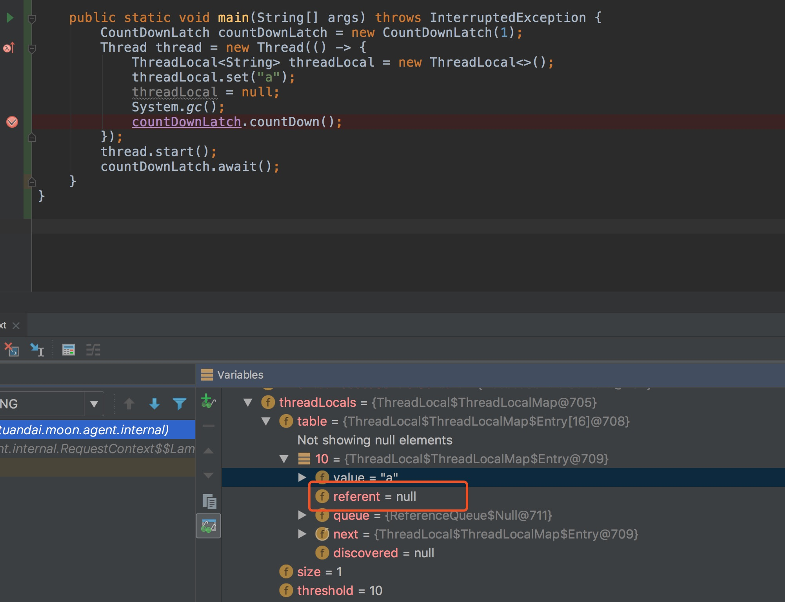
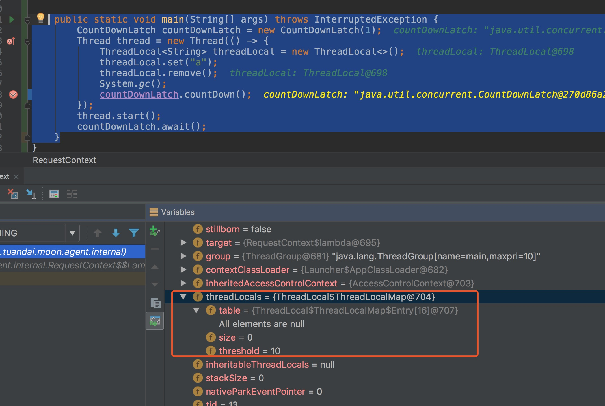

ThreadLocal详解(二)
接下来我们继续聊get,remove方法。以及ThreadLocal使用不当会发生的问题。
目录
get
public T get() {
Thread t = Thread.currentThread();
ThreadLocalMap map = getMap(t);
if (map != null) {
ThreadLocalMap.Entry e = map.getEntry(this);
if (e != null) {
@SuppressWarnings("unchecked")
T result = (T)e.value;
return result;
}
}
return setInitialValue();
}
内容比较简单,不再追诉.
map.getEntry(this)
private Entry getEntry(ThreadLocal<?> key) {
//threadLocal的下一个nextHashCode与哈希表的长度计算出下标
int i = key.threadLocalHashCode & (table.length - 1);
Entry e = table[i];
if (e != null && e.get() == key)//如果找到了直接返回
return e;
else
return getEntryAfterMiss(key, i, e);
}
getEntryAfterMiss(key, i, e)
private Entry getEntryAfterMiss(ThreadLocal<?> key, int i, Entry e) {
Entry[] tab = table;
int len = tab.length;
while (e != null) {//向后遍历直到遇到空插槽
ThreadLocal<?> k = e.get();
if (k == key) //找到了直接返回
return e;
if (k == null)//旧条目需要清除
expungeStaleEntry(i);
else
i = nextIndex(i, len);
e = tab[i];//下一个条目
}
return null;
}
根据开放寻址法,如果遍历到了空插槽还没找到条目,则表示查找失败,直接返回空。
查找还是比较简单的.
remove
public void remove() {
ThreadLocalMap m = getMap(Thread.currentThread());
if (m != null)
m.remove(this);
}
m.remove(this)
private void remove(ThreadLocal<?> key) {
Entry[] tab = table;
int len = tab.length;
int i = key.threadLocalHashCode & (len-1);
for (Entry e = tab[i];
e != null;
e = tab[i = nextIndex(i, len)]) {//向后遍历直到遇到空插槽
if (e.get() == key) {//找到了的话进行clear,并清除该插槽
e.clear();//将引用置为null.以便expungeStaleEntry方法可以清除它
expungeStaleEntry(i);
return;
}
}
}
public void clear() {
this.referent = null;
}
从上面可以看出get,set,remove方法都会清除旧条目.但是由于Thread有个threadLocals引用指向了ThreadLocal的table,而table又存放着entry.
内存溢出
很多文章都说thread使用不当的话会导致内存溢出,因为虽然ThreadLocalMap的key虽然为软引用,但是value是强引用.如果value值在被使用的话会导致gc无法回收条目。
但是实际上真的如此吗？
我写了个例子:
public static void main(String[] args) throws InterruptedException {
CountDownLatch countDownLatch = new CountDownLatch(1);
Thread thread = new Thread(() -> {
ThreadLocal<String> threadLocal = new ThreadLocal<>();
threadLocal.set("a");
threadLocal = null;
System.gc();
countDownLatch.countDown();
});
thread.start();
countDownLatch.await();
}
debug如下图：  可以看到虽然key为null了,但是value并没有为null.是内存泄漏了.但是回顾源码,threadLocal在set,get,remove时会去清除旧条目.但是System.gc()之后并没有调用相关方法.没有触发清除动作.
我稍微改了下代码:
public static void main(String[] args) throws InterruptedException {
CountDownLatch countDownLatch = new CountDownLatch(1);
Thread thread = new Thread(() -> {
ThreadLocal<String> threadLocal = new ThreadLocal<>();
threadLocal.set("a");
threadLocal.remove();
System.gc();
countDownLatch.countDown();
});
thread.start();
countDownLatch.await();
}
debug如图:  可以看到内存哈希表里面并没有数据了. 也就说上面的话只对了一半.如果不合理使用threadLocal的话会导致内存溢出.所以在使用threadLocal时一定在用完之后调用remove方法.
调用remove方法除了可以防止内存溢出之外,还可以保证线程数据的干净.在线程池中的线程如果使用threadLocal,但是没有及时remove的话,由于线程池中的线程的重用,会将上一个请求的数据带入到线程这一次请求.典型的就是Tomcate的线程池,自定义用threadLocal存放session的话,会发现A用户拿到了B用户的数据.就是由于没有及时remove导致的。